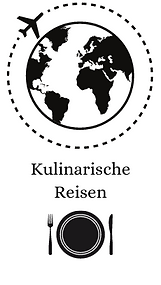

Unser Blog ist der perfekte Ort, um die Gerichte und Aromen aus verschiedenen Ländern kennenzulernen. Wir glauben fest daran, dass Essen nicht nur eine Notwendigkeit ist, sondern auch eine wunderbare Möglichkeit, Kulturen zu verstehen und zu verbinden. Durch unsere Rezepte kannst du die Essenz eines Landes einfangen und in deiner eigenen Küche nachempfinden.

Kulinarisch reisen bedeutet:
- Entdecken, kennenlernen, lesen, lernen, kochen, genießen....
- Mehr erfahren über die Geschichte fremder Küchen ferner Länder.
- Informationen über den Ursprung der traditionellen Küche verschiedener Länder bekommen.
- Zu wissen um die Herkunft der Lebensmittel, welche in der länderspezifischen lokalen Küche eingesetzt werden.
- Zu wissen um die Herkunft der Lebensmittel, welche in der länderspezifischen lokalen Küche eingesetzt werden.
- Einsatz und Verwendung so mancher außergewöhnlicher Lebensmittel eines jeden Landes uvm.
Also schnall dich an und lass dich von unserem Reiseblog mitnehmen - lass uns gemeinsam die Welt der Küche erkunden und neue Geschmackswelten entdecken. Wir freuen uns darauf, dich auf dieser kulinarischen Reise zu begleiten!